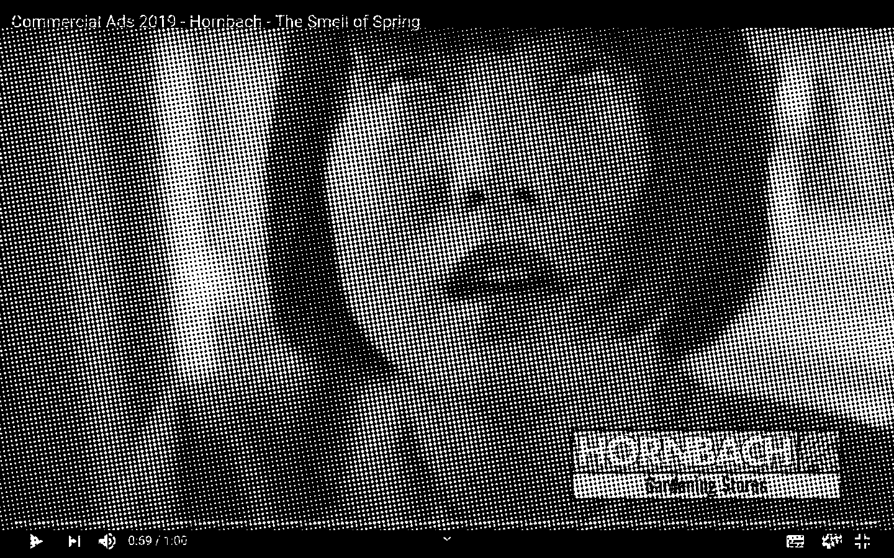
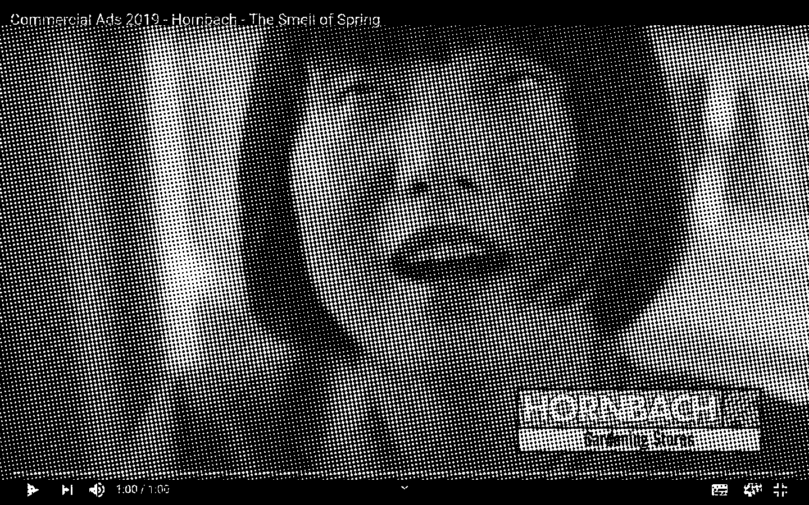
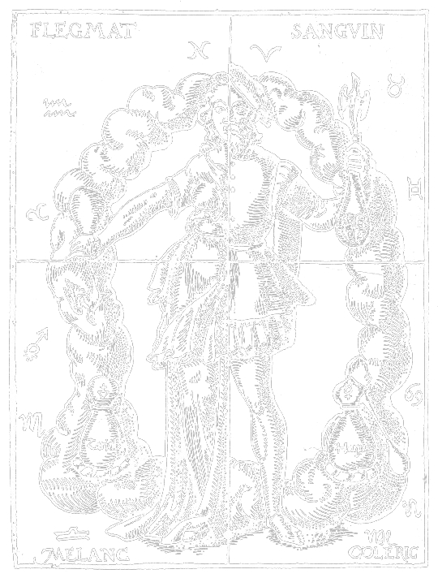

<span class="dot prologue">.</span><!DOCTYPE html>
<html lang="en" >
<head>
  <meta charset="UTF-8">
  <meta name="viewport" content="width=device-width, initial-scale=1">
  <title>Thesis2021_Eunji_Lee</title>
  <link rel="stylesheet" href="./style.css">

</head>
<body>
<!-- partial:index.partial.html -->
<body>


      <div class="top" id="top" style="font-size:1.8em; line-height: 1em; position: fixed;">
            <div class="title" style="padding:0.5em;">
                Melancholic Inspiration:&thinsp;Light in the midst of misery


                <div style="font-size: 0.6em; text-align: right; display: flex;">
                  by Eunji Lee
                </div>
            </div>


                      <div class="button" style="display:inline-block;">
                        <button id="toc" type="button" onclick="myFunction(this)" class="collapsible" style="margin-top:0.2em;">
                          <div class="bar1"></div>
                          <div class="bar2"></div>
                          <div class="bar3"></div>
                        </button>

                        <div id="toc" class="content" style="margin-top:-0.2em;">
                            <li><a href="#abstract">0.	Abstract</a></li>
                            <li>1.	Prologue</li>
                            <li><a href="#ch2">2.	What is Melancholia?</a>
                            <br><span style="margin-left: 50px;" >— From Aristotle to Freud</span>
                            <br><span style="margin-left: 50px;" >—	A Plea for New Perspective</span>
                            <br><span style="margin-left: 50px;" >— Create to heal: Louise Bourgeois</span>
                            <li>3.	Three People, Three Melancholia</li>
                            <li>  4.	Epilogue</li>
                            <li>  5.	References</li>

                        </div>
        </div>


      </div>


            <div class="thesis">


                  <div id="abstract" class="abstract">
                    <span style="font-size:1.5em;">0<span class="dot abstract">.</span> Abstract</span>
                    <p>
                      Everyday we wake up and live the day we have been given<span class="dot abstract">.</span> It is such a grateful thing that we are breathing and the heart is beating, but to some people, it may not be the case<span class="dot abstract">.</span> It has been more than 2 years now since I have noticed that something was different inside me<span class="dot abstract">.</span> I could not function properly in many ways and I was afraid because I was unfamiliar with my new-self<span class="dot abstract">.</span> Everyday was a burden living in the shadows and I thought it might be even better if I could just disappear<span class="dot abstract">.</span> I realized I should get consulted and now I know I am going through a mental disorder<span class="dot abstract">.</span> Even though it sounds a bit depressing but that is not the only side of it<span class="dot abstract">.</span> Because of the illness I was able to think more<span class="dot abstract">.</span> Thanks to the melancholic mood, I was able to create some satisfying work<span class="dot abstract">.</span> Sometimes it acts as a disrupter but at times it becomes a pilot<span class="dot abstract">.</span> In my thesis, I want to explore the correlation between depression(or in a broader sense: mental illness) and creativity with references of studies and some arguments of philosophers in history<span class="dot abstract">.</span> By writing this thesis, I want to understand more about myself and make people with/without mental disorder see the positive sides of it and change the perception of depression that we commonly have<span class="dot abstract">.</span>

                    </p>

                  <p>
                    Keywords: Melancholy, Mental Disorder, Depression, Inspiration, Art, Black Bile, Creativity, Philosophy
                  </p>
                      </div>

                      <br />
                  <div class="prologue">
                    <span style="font-size:1.5em;">1<span class="dot prologue">.</span>	Prologue</span>

                    <p>
                      <i>“Nihao<span class="dot prologue">.</span>”</i> Another random guy greeted me on the street in a language that I don’t speak, and the guy himself doesn’t seem to speak either<span class="dot prologue">.</span> It might be the 58th “Nihao” I have heard living in the Netherlands<span class="dot prologue">.</span> I stopped counting so I am not so sure<span class="dot prologue">.</span> Sometimes I sense sexual connotation from their eyes and the tone of their voice<span class="dot prologue">.</span> Non-asian people ask me if there is any chance that they purely wanted to say hello<span class="dot prologue">.</span> Then I ask them again if they greet anyone on the street in a language that you think the person seem to speak<span class="dot prologue">.</span> You don’t say “Bonjour<span class="dot prologue">.</span>” to a random person who you assume he or she is french only by their look<span class="dot prologue">.</span> Outside, I feel uncomfortable and insecure<span class="dot prologue">.</span> I want to be invisible<span class="dot prologue">.</span> Every morning I hope not to hear any words from anyone I do not know<span class="dot prologue">.</span>
                    </p>

                  <p>
                    Once I was in Primark with a friend<span class="dot prologue">.</span> Kids’ pajamas that seemed to be a collaboration with Disney were on display<span class="dot prologue">.</span> I told my friend, “Look! It seems they’ve collaborated with Disney!” Soon I found a random guy stood next to me and asked, “Do you want to buy this?” as if he is willing to buy me one if I want<span class="dot prologue">.</span> But at first I didn’t realize<span class="dot prologue">.</span> So I asked again with a little smile on my face, “Sorry?” to check if what I just heard was right<span class="dot prologue">.</span> He repeated what he said<span class="dot prologue">.</span> I heard him just right<span class="dot prologue">.</span> Then my friend snatched my hand, told me not to smile
                    at him and told him off with anger<span class="dot prologue">.</span> I felt like a fool<span class="dot prologue">.</span> Why did I have
                    to smile?
                  </p>

                  <p>
                    On the television, I saw a german advert<span class="dot prologue">.</span> Here is how the guardian described the ad<span class="dot prologue">.</span>
                    <p style="padding-left: 1.5em; width: 90%;">
                      <i>“&#8202;The commercial, produced by the German DIY-store chain Hornbach, shows white men working outside in a garden before removing their sweaty clothing and dumping it in a box<span class="dot prologue">.</span> The ad then cuts to a grey, industrial city that resembles Tokyo where an Asian woman buys a bag of dirty clothes – previously worn by the men – opens it and moans with pleasure, as the commercial ends with a slogan saying: “&#8202;That’s how the spring smells<span class="dot prologue">.</span>””&thinsp;</i> <a id="footnote">1)</a>

                    </p>
                  </p>

                   

                    <p>
                      Immediately I got furious<span class="dot prologue">.</span> Am I truly living in the 21st century? I could not believe what I have seen. Do they even know what we have to go through in our daily lives? How can they so easily say it’s a joke? What asian women experience is not a joke<span class="dot prologue">.</span> For whatever reasons, some people have wrong and stereotypical image and fantasy on us<span class="dot prologue">.</span> They think asian women are weak, easy, funny, and weird<span class="dot prologue">.</span> So easily we get victimized based on racial slurs<span class="dot prologue">.</span> I was so mad with the advert and put it on my social media to raise my voice<span class="dot prologue">.</span> Soon I have got a message from a fellow friend who is not from asia, asking if I could explain why this is racist<span class="dot prologue">.</span> I was shocked<span class="dot prologue">.</span> I thought this was too obvious but for others it wasn’t<span class="dot prologue">.</span> It was not the advert that made me feel lethargic but the fact that this anger I feel cannot be shared had made me feel so different and apart from others who are non-asian<span class="dot prologue">.</span> Slowly I had built a wall between me and others<span class="dot prologue">.</span> I was alone<span class="dot prologue">.</span>
                    </p>

                  <p>
                    I stayed home more than ever<span class="dot prologue">.</span> I wanted to make as small human interaction as possible<span class="dot prologue">.</span> Even just seeing people who look different from me made me insecure and watching birds flying outside the window comforted me more than anyone<span class="dot prologue">.</span> There were a lot more incidents happened that made me depressed<span class="dot prologue">.</span> If the total amount of tears I have cried in my whole life could be measured as 100, 50 was from the Netherlands<span class="dot prologue">.</span> It was not that only the Netherlands was affecting my depression<span class="dot prologue">.</span> It was also my parents, my childhood, my ex-boyfriends, my study, my religion, my sexuality, every little thing was dragging me into a deep dump that I cannot come out of<span class="dot prologue">.</span> Everything was attacking me in so many angles<span class="dot prologue">.</span> Sometimes I cried and I didn’t know why I was crying<span class="dot prologue">.</span> I even tried to search it on the internet to figure out why I am crying<span class="dot prologue">.</span> It felt so hollow inside my chest<span class="dot prologue">.</span> I also had experienced light alcohol dependency<span class="dot prologue">.</span> Only after drinking, I could tear down the pressure that I felt on my chest<span class="dot prologue">.</span>
                  </p>

                  <p>
                    If all these depressive symptoms were the only thing that I have experienced, I wouldn’t have taken this subject for my thesis<span class="dot prologue">.</span> Although it was severely painful and I lost all the energy, due to depression I could think more<span class="dot prologue">.</span> As I was thinking, I could question things<span class="dot prologue">.</span> Through questioning, I could get to know myself more<span class="dot prologue">.</span> By knowing myself more, I questioned myself of what I could do<span class="dot prologue">.</span> Then I tried to push myself to do what I have to do<span class="dot prologue">.</span> Of course it is not easy<span class="dot prologue">.</span> Most of the days, I failed<span class="dot prologue">.</span> But when I did make it, it was a small step to get out of the dump that I was tied down<span class="dot prologue">.</span> That is what I have experienced<span class="dot prologue">.</span> And I want others to know too<span class="dot prologue">.</span> I want to tell others who are experiencing melancholia that even though it feels so dark, and could see no light, you might be able to find a dot<span class="dot prologue">.</span> Follow the dot, then you see a rope<span class="dot prologue">.</span> Climb up the rope<span class="dot prologue">.</span> You fall<span class="dot prologue">.</span> It’s okay<span class="dot prologue">.</span> You can climb again<span class="dot prologue">.</span> Make little steps<span class="dot prologue">.</span> One day you will see the light<span class="dot prologue">.</span> You might fall again into the dump<span class="dot prologue">.</span> But now you know you can come out if you try<span class="dot prologue">.</span> Knowing that you can already makes huge difference from not knowing<span class="dot prologue">.</span> Be creative to find a dot and you will be able to take the next step<span class="dot prologue">.</span>
                  </p>

                  </div>

                  <a name="ch2"></a>
                  <div id="ch2" class="ch2">
                    <span style="font-size:1.5em;">2<span class="dot ch2">.</span>	What is Melancholia?</span>

                  <p>
                    I wanted to know what this illness is that made me so troubled Of course, no one can assure what is right or wrong Especially with this type of subject that is abstract, it is even harder to determine<span class="dot ch2">.</span> Though it was interesting to see how Aristotle explained the mechanism of black bile inside human body to understand why melancholics behave in certain ways, and how Freud tried to explain melancholia by psychoanalysis Moreover, Kristeva’s innovative view on artwork as a result of therapeutic activity helped me see melancholia in a new way<span class="dot ch2">.</span> To know and understand myself more, I had to face the illness directly So I started from the word itself From the very beginning, the word “melancholy” was a term that was used in Ancient Greek Medicine Etymologically, the word “melancholy” originated from the Acient Greek word melánkholos (μελάγχολος), which is a compound word of mélas(μέλας), meaning “black”, and khólos(χόλος), meaning “bile”<span class="dot ch2">.</span>

                  </p>

                  

                  <h4 style="margin:1em;">The Four Humors</h4>

                  <p>
                  To understand Aristotle’s discourse on melancholia, I should first explain about the theory of Hippocrates’<span class="dot ch2">.</span> In 400 B<span class="dot ch2">.</span>C<span class="dot ch2">.</span>, the Greek physician Hippocrates theorized The Four Humors
                  insisting that the human body consits of four major fluids: blood, black bile, yellow bile, and phlegm<span class="dot ch2">.</span> The Greeks believed that these Four Humours should remain balanced in order for people to maintain good health<span class="dot ch2">.</span> A preponderance of black bile would cause a person to become despondent and anxious<span class="dot ch2">.</span> They called this condition melancholia and it became the first term used for depression<span class="dot ch2">.</span> Even though modern medical science has rejected the theories of the four temperaments, it is still very valuable to see how ancient people thought of melancholia<span class="dot ch2">.</span> It is how they imagined the fluctuous hormonic reaction inside the body<span class="dot ch2">.</span>
                  </p>

                  <h4 style="margin:1em;">From Aristotle to Freud</h4>

                  <p>
                    In liberal arts, specifically in philosopy, it all started from the great Greek philosopher,
                    Aristotle<span class="dot ch2">.</span> In one of his writings called Problems II, Book XXX (there has been a controversy over its authenticity of whether it is an Aristotlian or pseudo-Aristotlian), he addresses a question about melancholia asking why all men who have become outstanding in philosophy, statesmanship, poetry, or the arts are melancholic<span class="dot ch2">.</span> He was the first man to associate melancholia to philosophy, politics, poetry, and the arts<span class="dot ch2">.</span> Since then, it had been a major topic in philosophy and aesthetics<span class="dot ch2">.</span> Furthermore, Aristotle saw melancholia as a compound of two conflicting nature<span class="dot ch2">.</span> He understood that melancholic humor is a mixture of hot and cold, and it itself is very variable<span class="dot ch2">.</span> Black bile(melancholic humor) can be heated to high degree and turn cold as ice for a flash<span class="dot ch2">.</span> Thus, melancholics are inevitably in erratic and fluctuant state due to their disposition<span class="dot ch2">.</span> The heat inside one's body is the power that moves its mind and soul, and the hot air means some kind of erotic passion<span class="dot ch2">.</span> Erotic passion here is not limited to the realm of sex but can also be interpreted as love<span class="dot ch2">.</span> That passion stimulates senses and it operates imagination to its extreme<span class="dot ch2">.</span> The temperature of black bile has direct effects to one's mind, creating a certain character, and there is great variety in the temperaments of melancholics<span class="dot ch2">.</span> Some could be puzzled because they assumed that melancholics are always in depressive mood, but it is not true<span class="dot ch2">.</span> Also in modern psychiatry, they say there are various types of depression<span class="dot ch2">.</span> It varies in accordance of the duration of highs and lows in emotion<span class="dot ch2">.</span> Perhaps this can be linked to why melancholics do not share identical experience but different case by case<span class="dot ch2">.</span>
                    Sigmund Freud is an Austrian neurologist and the founder of psychoanalysis who analyzed melancholia pathologically through comparison with mourning<span class="dot ch2">.</span> Mourning and Melancholia is a work of Freud which has influenced numerous philosophers<span class="dot ch2">.</span> According to his writing, mourning is a "reaction to the loss of a loved person, or to the loss of some abstraction which has taken the place of one, such as one’s country, liberty, an ideal, and so on"<span class="dot ch2">.</span> In mourning, it is the world which has become poor and empty;
                    whereas, in melancholia, it is the ego itself<span class="dot ch2">.</span> In melancholia, one cannot consciously percieve what they have lost, but in contrast, there is nothing about the loss that is unconscious when it comes to mourning<span class="dot ch2">.</span> This is why mourning is considered a healthy and natural process that a person goes through when grieving a loss, while melancholia is considered pathological<span class="dot ch2">.</span> In addition, Freud believed that depression is highly affected by personal history, and he emphasized the role of grief resulting from the loss of an important relationship, triggering earlier memories of loss of, or rejection by, those first objects of love, the parents<span class="dot ch2">.</span>
                    Freud argued that the ultimate impetus of melancholia is an erotic desire, and the loss of capacity to love due to the loss of a loved object becomes an 'excessive attachment' towards the lost object and leads to melancholia through the identification process of the self and the lost object<span class="dot ch2">.</span> Moreover, Freud points out self-reporaches and self-revilings, and excessive guilt as distinguisihing features of melancholia<span class="dot ch2">.</span> He argues that “self-reproaches are reproaches against a loved object which have been shifted away from it on to the patient’s own ego” and that establish a relation of identification between the melancholic’s ego and the loved object<span class="dot ch2">.</span>

                  </p>

                  <p>
                    <h4 style="margin:1em;">A Plea for New Perspective</h4>
                    As opposed to present-day perception of melancholia, there were times when it was praised and glorified in history. Aristotle was the first man stating in the 4th century B.C.E. that
                    “all men who have attained excellence in philosophy, in poetry, in art and in politics, even Socrates and Plato, had a melancholic habitus; indeed some suffered even from melancholic disease.
                    During the Renaissance period, this belief had come to its revival and led John Milton to exclaim, in his poem Il Penseroso:
                    “Hail, divinest melancholy / Whose saintly visage is too bright / To hit the sense of human sight.”
                  </p>

                  Albrecht Dürer - Melencolia I (1514)
                  <p>
                    However, by the 18th century, the term melancholia gained back its clinical roots and had been considered as madness or as a deadly sin in religious perspective for a long time. As you can see from the constant flips and reversals on perception of melancholia, it is not the first nor unconventional attempt to bring a change towards the way we perceive the condition. Melancholia may seem negative and in many aspects, it is indeed, but I wanted to say that it is not only negative but there actually are some potentials of melancholia. As a person who have experienced it, and still does time to time, it sometimes makes you think, question, fight, and create. That is why I wanted to find if there had been some discussions regarding the relation between melancholia and creativity. Finding out how greek people in acient times had thought of melancholia was somehow comforting. Not that it says that I am special or anything but that I am not the only one who tried to make a link between melancholia and creativity. Nevertheless, I have found the right person who has suggested a great insight on melancholia; Julia Kristeva, and the right person who has proved it; Louise Bourgeois.
                    Julia Kristeva, born in 1941, is a Bulgarian-French philosopher, psychoanalyst, feminist and she explains melancholia as a source of creation to poets and artists. In her work Desire in Language (1980), Kristeva describes “the symbolic” as the realm in which a child becomes a “speaking subject,” and develops a sense of identity separate from the mother, distinguishing between self and other. This process of separation is called abjection, and in order to enter “the symbolic” — the world of language, meaning, culture, and the social which can also be associated with the masculine, the law, and structure
                    —, the child must reject and move away from the mother. She argues that the perpetual desire for the lost mother, refusing to let go of that first maternal identification, can be a source of great artistic creativity. In her other work Black Sun (1989), she points out that especially female children continue to simultaneously reject and identify with the mother figure, and that they are more prone to retain a close connection to what she called “the semiotic” — it is similar to the concept of Lacan’s pre-mirror stage, and she refers to this phenomenon as melancholia. Furthermore, Kristeva associated aesthetic experience of the abject, such as art and literature, with poetic catharsis – an impure process that allows the artist or author to protect themselves from the abject only by immersing themselves within it.2) In other words, Kristeva contends that aesthetic elaboration through a work of art can be considered as a therapeutic method to alleviate the pain of melancholia. Thus, in her view, those creations of melancholic artists are the outcome of a therapeutic process to heal, and that is what Kristeva calls the melancholic “sublime.” 3)
                    Before writing this thesis, I have known Louise Bourgeois only as an artist who made grotesque and sexual work, but during the research I happened to find more about her background stories and therefore I could have a better understanding of her work and could relate to her. Having known about her stories behind her work, she was the right person as a reference to my subject who can verify Kristeva’s theory.
                  </p>
                  <h4 style="margin:1em;">Create to heal: Louise Bourgeois</h4>
                  <p>
                    Louise Bourgeois, a French-American artist, was born in 1911 in Paris and her family ran a business of repairing tapestries. She was very close to her mother Joséphine, but her father Louis, whom she was named after, was a person who gave her traumatic memories. Her mother went through an illness and for 10 years her father was having an affair with Louise’s English teacher, Sadie, who resided with her family. As much as she loved her mother, she loathed her father. Ironically, this horrible traumatic memory was what she got the most inspiration from. This marked the pivotal trauma that led her to create autobiographical artworks encompassing the subject of family, motherhood, relation2)
                    Kristeva, “Powers of Horror” (1982), p. 15; Oliver, “Psychoanalysis, aesthetics, and politics in the work of Kristeva” (2009).
                    3) “Sublimation’s dynamics, by summoning up primary processes and idealization, weaves a hypersign around and with the depressive void. This is allegory, as lavishness of that which no longer is, but which regains for myself a higher meaning because I am able to remake nothingness, better than it was and within an unchanging harmony, here and now and forever, for the sake of someone else. Artifice, as sublime meaning for and on behalf of the underlying, implicit nonbeing, replaces the ephemeral. Beauty is consubstantial with it. Like feminine finery concealing stubborn depressions, beauty emerges as the admirable face of loss, transforming it in order to make it live […]. Sublimation alone withstands death. The beautiful object that can bewitch us into its world seems to us more worthy of adoption than any loved or hated cause for wound or sorrow. Depression recognizes this and agrees to live within and for that object, but such adoption of the sublime is no longer libidinal. It is already detached, dissociated, it has already integrated the traces of death, which is signified as lack of concern, absentmindedness, carelessness. Beauty is an artifice; it is imaginary.”
                    ships, abandonment, and the body.
                  </p>

                  <p>
                    Maman
                    Maman, a sculpture work that depicts a spider, would be the most well known work of Bourgeois. It is about, as you could possibly assume from the title, her mother. Spider resembles her mother in the sense that it weaves its web and that her mother made tapestries. It also depicts the strength of the mother with metaphors of nurture and protection. Spiders are known for its sacrificing maternity as they protect eggs at their best, and Bourgeois adopted the form of a spider to glorify the motherhood. The long and fragile legs of the spider reflect her mother being sick, but paradoxically it maximizes the awe of motherhood.
                    “The Spider is an ode to my mother. She was my best friend. Like a spider, my mother was a weaver. My family was in the business of tapestry restoration, and my mother was in charge of the workshop. Like spiders, my mother was very clever. Spiders are friendly presences that eat mosquitoes. We know that mosquitoes spread diseases and are therefore unwanted. So, spiders are helpful and protective, just like my mother.” — Louise Bourgeois 4)
                  </p>


                  <p>
                    The destruction of the Father
                    The Destruction of the Father (1974), how dreadful and grave the title is, represents a family dinner table. It was inspired by her childhood fantasy in which she imagines avenging the paternal domination of the family at mealtimes. In this work, she dismembered her father, cannibalised him. It represents the reversed power strugle, depriving authority from her father. It seems like a punishment she gave to her father for betraying her mother and her family.
                    “Time – time lived, time forgotten, time shared. What does time inflict – dust and disintegration? My reminiscences help me live in the present, and I want them to survive. I am a prisoner of my emotions. You have to tell your story, and you have to forget your story. You forget and forgive. It liberates you.”
                    4) Tate acquires Louise Bourgeois’s giant spider, Maman, https://www.tate.org.uk/press/press-releases/tate-acquires-louise-bourgeoiss-giant-spider-maman
                    Maman (1999), Louise Bourgeois, Bronze, marble, and stainless steel, Guggenheim Bilbao Museoa, © Louise Bourgeois/Licensed by VAGA, New York, NY
                    —
                    Louise Bourgeois

                  </p>

                  <p>
                    Bourgeois considered art in parallel to a form of psychoanalysis, offering privilleged and exclusive access to the unconciousness. By confronting and countless works of sublimation, Louise was able to heal. Her own work was a series of self-healing act to exorcise her trauma.
                    Similar to Louise, I have witnessed my father’s inappropriate message when I was 18 years old, and since then I have been holding resentments towards him for betraying my mother. According to Freud and Kristeva, it is a result of my identification to my mother. Adapting Kristeva’s theory to my own experience in the Netherlands, I partially interpreted the mother figure as my home country and understood my melancholia as the conflict of moving away from Korea, my motherland, to the Netherlands, “the symbolic.” As a woman, not just woman but asian woman living in the White-centered world, I was abjected. Living in a world where I become the minoirty — ignoring the fact that I was already the minority in Korea as a woman — in order to endure all those hardships, I had to depend on something, and that was Chrisitianity. Unfortunately, I was abjected again because of my sexuality. I have acknowledged that I was bisexual when I was 14 years old. Since then I have known about my sexuality, but at the Korean church where I fleed to, they told me I have to abandon my sexuality if I want to follow Jesus.
                    Just like a child growing up, moving away from their mother, I had to enter the new world of language, culture, and structure. In the way of the process, I have experienced conflicts and that also brought up my childhood memories that I happened to forget for a while. I have experienced several sexual harrassment when I was only six or seven years old from random people, and having to experience that again, and to be exposed to similar situations in a place where I am not familiar with brought that childhood memories again and kept lingering inside my brain. So many times I have been a victim of sexual harrasmant. This year I experienced another from my father’s friend two days before my birthday. That again pulled me down to a huge dump and took some days for me to
                    Destruction of the father, Bourgeois, Louise. plaster, latex, wood, fabric, and red light, 1974. In Art Slant, by Shasha Bergstrom-Katz.
                    come out. Sometimes I questioned myself if the problem was me, having to experience all those incidents. Here comes creativity to rescue. Changing the object to blame from myself to the perpetrators. Then I gain strengths to fight and it can be further turned into aesthetic elaboration to heal finally.
                    To sum up, the whole journey of writing this thesis has given me opportunities to understand myself more in various angles and new insight to deal with my mental illness. I was able to confront what I am going through and discover a way to overcome this darkness. What a complicated world of psychiatry. As I was greatly inspired by Julia Kristeva's theory on melancholia and creativity, I want to end this chapter by quoting Kristeva's interview:
                    "As I say in my book, beauty is born in the land of melancholia; it is a source of harmony that goes beyond despair [...]. Depression is at the threshold of creativity. When depression becomes creative, however, it has given a name and has thus been overcome [...]. Depression remains a secret force, perhaps even a form of modern sacredness.” 5)


                  </p>


                  </div>

            </div>


<script>

var coll = document.getElementsByClassName("collapsible");
var i;

for (i = 0; i < coll.length; i++) {
  coll[i].addEventListener("click", function() {
    this.classList.toggle("active");
    var content = this.nextElementSibling;
    if (content.style.maxHeight){
      content.style.maxHeight = null;
    } else {
      content.style.maxHeight = content.scrollHeight + "px";
    }
  });
}


// When the user scrolls down 20px from the top of the document, slide down the navbar
window.onscroll = function() {scrollFunction()};

function scrollFunction() {
  if (document.body.scrollTop > 20 || document.documentElement.scrollTop > 20) {
    document.getElementById("top").style.top = "0";
  } else {
    document.getElementById("top").style.top = "-200px";
  }
}


function myFunction(x) {
  x.classList.toggle("change");
}


</script>
    </body>
<!-- partial -->
  <script src='https://cdnjs.cloudflare.com/ajax/libs/jquery/3.5.1/jquery.min.js'></script><script  src="./script.js"></script>

</body>
</html>
